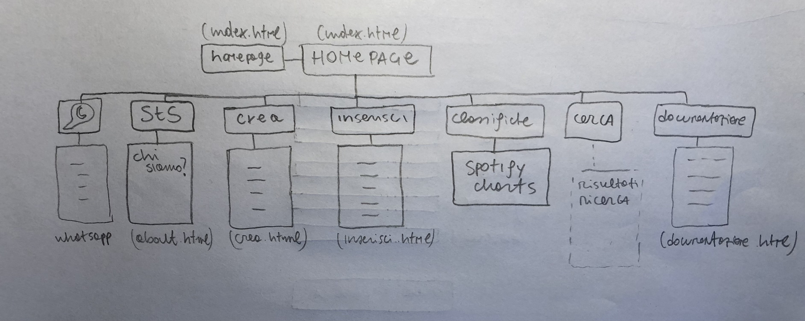
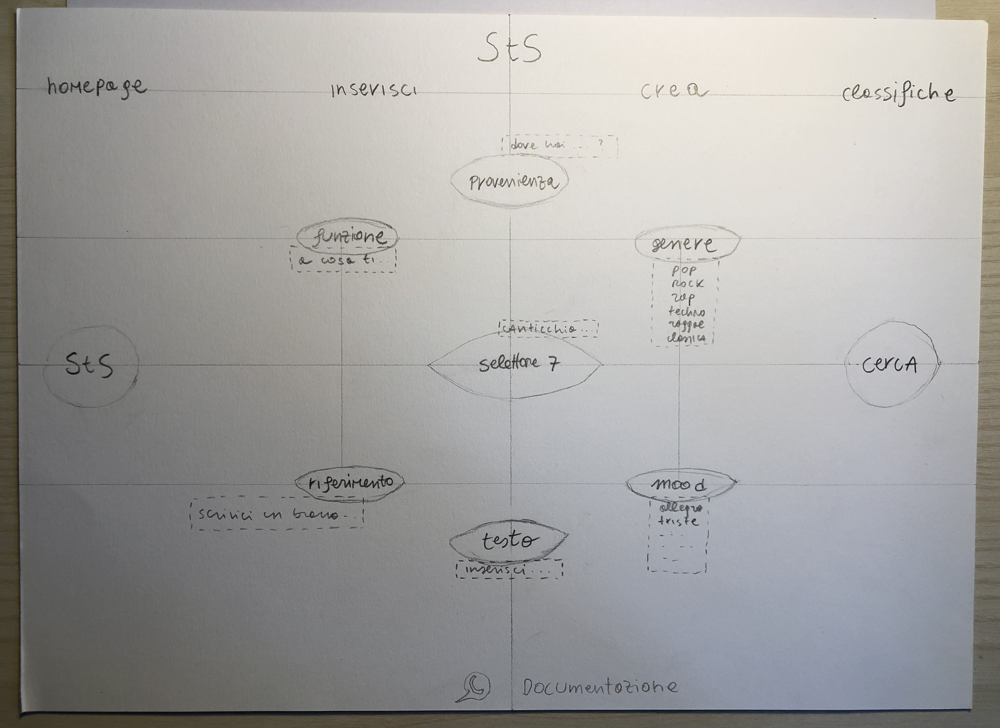
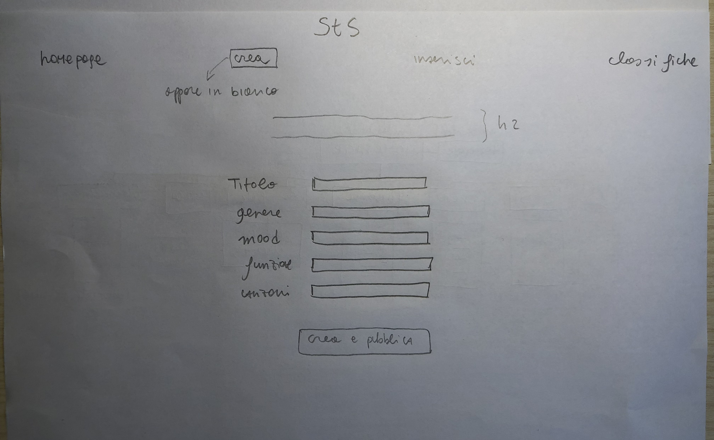

0. Abstract
Spot the Song è un portale di ricerca che vuole aiutare a trovare canzoni di cui non si conosce il titolo, il suo target è composto da chiunque voglia rintracciare un brano di cui non sa il nome. Il sito ha una doppia funzione: identificare e proporre dei brani. L’obiettivo di Spot the Song è permettere individuare la canzone voluta, indipendentemente dalla quantità di informazioni sul brano posseduta dall’utente all’inizio della ricerca. Il sito è valorizzato dal grado di controllo e libertà offerto all’utente durante la sua navigazione e, conseguentemente, per la precisione dei risultati proposti. Per la propria ricerca l’utente ha a disposizione 7 selettori di filtri, che permettono di descrivere altrettanti aspetti della canzone; in particolare, il selettore centrale consente di canticchiare il brano voluto.
Project Management Plan
1. Benchmarking
Spot the Song viene concepito con un obiettivo ben preciso: permettere all’utente di riuscire sempre a trovare la canzone che sta cercando, anche nell’ipotesi in cui esso disponga di un numero minimo di informazioni al riguardo.
Il sito vuole distinguersi per la propria potenza ed efficacia in quanto strumento di ricerca; Spot The Song vuole anche essere un servizio dalle persone per le persone, e in questo sta il senso delle funzioni ‘crea’ e ‘inserisci’, che permettono agli utenti stessi di arricchire la libreria del nostro portale. Il competitor principale è Shazam, che offre però meno funzionalità, in quanto opera solo a partire dall’ascolto della canzone nel suo formato originale; vale lo stesso per Midomi, nel quale, inoltre, la funzione ‘canticchia’ è poco ricettiva. Non esiste alcun sito che abbia contemporaneamente tutte le possibilità offerte da StS.
Il sito non ha un target specifico, vuole essere utile a chiunque stia cercando una canzone, per i motivi più disparati.
2. Struttura e layout

wireframe del sito

architettura della homepage

architettura delle pagine 'crea' e 'inserisci'
3. Linguaggi e strumenti
Html, CSS, Google fonts e Font Awesome per le icone
Communication Strategy
1. Background
Ho trovato che i siti definibili come competitors fossero abbastanza dispersivi e, come già detto, con meno funzionalità. Ho inoltre riscontrato alcune difficoltà nell’avviare Shazam da Google, nonostante avessi installato l’estensione per Chrome richiesta; in generale, alla luce di quanto osservato nella fase di benchmarking, il mio intento è stato quello di creare un sito schematico e con poche distrazioni, orientato unicamente a eseguire efficacemente ciò per cui l’utente lo sta usando.
2. Obiettivi Comunicativi
Essendo il target del sito molto vasto, l’obiettivo primario, in termini di web design, è stato creare un’interfaccia semplice da comprendere e usare, alla portata di tutti. Il sito offre un servizio e per facilitarne la comprensione ho adottato uno stile essenziale, minimal e schematico. Per accentuare la coerenza interna del sito ho deciso di usare sempre la stessa font.
3. Target audience e messaggio
Il sito non ha un target specifico ma vuole essere utile a chiunque ne abbia bisogno, di conseguenza anche lo stile adottato è pensato per rendere l’interfaccia facilmente fruibile da chiunque. Spot the Song offre un servizio unico per accuratezza ed efficacia, l’impostazione grafica della home page è stata pensata per dare all’utente la sensazione di avere per le mani uno strumento potente e facile da usare, la cui priorità sia aiutarlo nella ricerca.
4. Promozione
5. Valutazione dei risultati